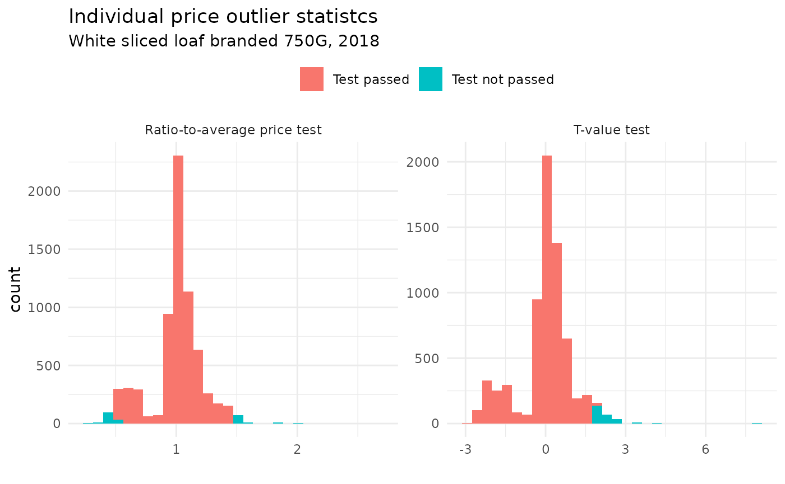

Item-level validation
The documentation for data validation is illustrated using a snippet of the UK CPI microdata.
| Year | COICOP5 | Product code | Product description | Reference quantity | Unit of reference quantity | Date of quote | Region | Shop identifier | Type of shop | Quantity observed | Unit of observed quantity | Price observed | Reference quantity price |
|---|---|---|---|---|---|---|---|---|---|---|---|---|---|
| 2018 | 1010103 | 210111 | WHITE SLICED LOAF BRANDED 750G | 750 | G | 201801 | 3 | 1 | 1 | 750 | G | 1.00 | 1.00 |
| 2018 | 1010103 | 210111 | WHITE SLICED LOAF BRANDED 750G | 750 | G | 201801 | 3 | 1 | 1 | 750 | G | 1.00 | 1.00 |
| 2018 | 1010103 | 210111 | WHITE SLICED LOAF BRANDED 750G | 750 | G | 201801 | 9 | 1 | 1 | 750 | G | 1.45 | 1.45 |
Intra- and inter-regional/country validation
- Two step procedure following international recommendations (ICP 2021, 26) and (World Bank 2013, 249), trying to identify and eliminate non-sampling,1 and production errors in the underlying data.
- Intra-regional validation: prices collected are edited and verified within a region or territorial area
- Inter-region validation: prices validation across all regions/countries, ensuring that average prices are based on comparable products across countries and that products have been accurately priced.
Intra-regional validation
- Intra-region validation establishes that price collectors within the same region have priced products that match the product specifications and that the prices they have reported are correct. This is done in two stages, which correspond to the outlier detection of (a) individual prices and (b) average price aggregates.
Stage 1: individual price outlier statistcs
For each product, a Price Observation Table is obtained, containing a characterisation of the individual product as well as two individual price outlier statistics, the Ratio-to-average price test and the t-value test; see World Bank (2013), table 9.1a for an extensive example.
Ratio-to-average price test: The ratio of an individual price observation , , of a specific product and the observed average price for the product, . An observed price passes the this test if the ratio is between 0.5 and 1.5, meaning it is no less than half or no more than double the mean price. This simple check flags extreme values without relying on standard deviation, which can itself be distorted by outliers (World Bank 2013, 251).
- t-value test: The ratio of the deviation of an individual price observation from the average reference quantity price for the product and the standard deviation of the product. To pass the test, the ratio must be 2.0 or less (any value greater than 2.0 is suspect because it falls outside the 95 percent confidence interval).
- Individual price quotes that do not pass these tests are flagged in
the price observation table. The two statistics are implemented in the
OECD price statistics package
OECD_SPPP. The price observation table is generated with the functionvalid_pot(), which callsvalid_r2aandvalid_tval.
Example using UK CPI microdata
#Price Observation Table
uk_pot <- uk_cpi |>
valid_pot()
head(uk_pot, n = 3) |>
gt() |>
tab_header(
title = md("**Price Observation Table**"),
subtitle = md("Example for `item_id` = 210111")
) |>
fmt_number(
columns = c(
`Ratio-to-average price test`,
`T-value test`
),
decimals = 1
)| Price Observation Table | ||||||||||||||||
Example for item_id = 210111 |
||||||||||||||||
| Year | Product code | Product description | Reference quantity | Unit of reference quantity | Date of quote | Region | Shop identifier | Type of shop | Quantity observed | Unit of observed quantity | Price observed | Reference quantity price | Ratio-to-average price test | T-value test | Ratio-to-average price test FLAG | T-value test FLAG |
|---|---|---|---|---|---|---|---|---|---|---|---|---|---|---|---|---|
| 2018 | 210111 | WHITE SLICED LOAF BRANDED 750G | 750 | G | 201801 | 3 | 1 | 1 | 750 | G | 1.00 | 1.00 | 1.0 | −0.2 | FALSE | FALSE |
| 2018 | 210111 | WHITE SLICED LOAF BRANDED 750G | 750 | G | 201801 | 3 | 1 | 1 | 750 | G | 1.00 | 1.00 | 1.0 | −0.2 | FALSE | FALSE |
| 2018 | 210111 | WHITE SLICED LOAF BRANDED 750G | 750 | G | 201801 | 9 | 1 | 1 | 750 | G | 1.45 | 1.45 | 1.4 | 1.8 | FALSE | FALSE |
uk_pot |>
select(
`Product code`,
`Ratio-to-average price test`:`T-value test`
) |>
pivot_longer(`Ratio-to-average price test`:`T-value test`) |>
mutate(
is.outlier = case_when(name == "Ratio-to-average price test" & (value < 0.5 | value > 1.5) ~ "Test not passed",
name == "T-value test" & (value > 2) ~ "Test not passed",
.default = "Test passed"
),
is.outlier = factor(is.outlier, levels = c("Test passed", "Test not passed"))
) |>
ggplot(aes(x = value, fill = is.outlier)) +
facet_wrap(~name, scales = "free") +
geom_histogram() +
labs(
title = "Individual price outlier statistcs",
subtitle = "White sliced loaf branded 750G, 2018",
x = "",
fill = ""
) +
theme_minimal()+
theme(legend.position = "top")
#> `stat_bin()` using `bins = 30`. Pick better value `binwidth`.
Stage 2: Average price statistics
This stage involves identifying extreme values among the average prices of the products listed in the average price table. An extreme value is defined as an individual price or average price that for a given test scores a value that falls outside a predetermined critical value and is build on two average price outlier statistics, which are summarised in the Average Price table; see World Bank (2013), table 9.2a and 9.2b for an extensive example. The two statisticis contained in this table are the max-min ratio test and the coefficient to variation test.
max-min ratio test: The ratio between the maximal and minimal observed price for product . Products where the maximal observed price is more than twice as big as the minimum are flagged
- coefficient to variation test: The standard deviation for the product expressed as a percentage of the average price for the product. Products with a coefficient of variation greater than 20% will be flagged.
- Product price quotes that do not pass these tests are flagged in the
average price table and is created using function
valid_aptin the OECD_SPPPs package.
Example using UK CPI microdata
# Average Price Table
uk_apt <- uk_cpi |>
valid_apt()
head(uk_apt) |>
gt() |>
tab_header(
title = md("**Average Price Table**"),
subtitle = md("Example for `item_id` = 210111, **pre-cleaning**")
) |>
fmt_number(columns = -c(Year, `Product code`),decimals = 1)| Average Price Table | |||||||||||
Example for item_id = 210111, pre-cleaning |
|||||||||||
| Year | Product code | Product description | Number of observations | Average price of product | Maximum price of product | Minimum price of product | Standard deviation | Max-min ratio | Coefficient of variation | Max-min ratio FLAG | Coefficient of variation FLAG |
|---|---|---|---|---|---|---|---|---|---|---|---|
| 2018 | 210111 | WHITE SLICED LOAF BRANDED 750G | 3,528.0 | 1.0 | 2.8 | 0.5 | 0.2 | 6.2 | 0.2 | TRUE | TRUE |
| 2020 | 210111 | WHITE SLICED LOAF BRANDED 750G | 1,576.0 | 1.0 | 1.5 | 0.5 | 0.2 | 3.4 | 0.2 | TRUE | TRUE |
| 2023 | 210111 | WHITE SLICED LOAF BRANDED 750G | 1,741.0 | 1.3 | 2.6 | 0.4 | 0.3 | 7.4 | 0.2 | TRUE | TRUE |
Linking validation pipelines
- The degree of validation depends on the quality of the underlying
microdata. With unconsolidated and/or raw data, more extensive revisions
of the raw data may be necessary.
- For example, these would require the validation and checking of the reference quantity price.
- For the selected product, a bimodal distribution is observed (after removing outliers).
- Eliminating these makes selected item pass all intra-regional validation checks.
uk_irv <- uk_cpi |>
# Apply Price Observation Table checks
valid_pot() |>
# Condition on price quotes which pass the Price Observation Table tests
filter(!`Ratio-to-average price test FLAG` & !`T-value test FLAG`) |>
# Remove bimodal distribution
filter(`Ratio-to-average price test` > 0.8) |>
# Apply Average Price Table checks
valid_apt()
uk_irv |>
gt() |>
tab_header(
title = md("**Average Price Table**"),
subtitle = md("Example for `item_id` = 210111, **post-cleaning**")
) |>
fmt_number(
columns = -c(Year, `Product code`),
decimals = 1
)| Average Price Table | |||||||||||
Example for item_id = 210111, post-cleaning |
|||||||||||
| Year | Product code | Product description | Number of observations | Average price of product | Maximum price of product | Minimum price of product | Standard deviation | Max-min ratio | Coefficient of variation | Max-min ratio FLAG | Coefficient of variation FLAG |
|---|---|---|---|---|---|---|---|---|---|---|---|
| 2018 | 210111 | WHITE SLICED LOAF BRANDED 750G | 2,980.0 | 1.1 | 1.4 | 0.8 | 0.1 | 1.7 | 0.1 | FALSE | FALSE |
| 2020 | 210111 | WHITE SLICED LOAF BRANDED 750G | 1,276.0 | 1.1 | 1.4 | 0.8 | 0.1 | 1.7 | 0.1 | FALSE | FALSE |
| 2023 | 210111 | WHITE SLICED LOAF BRANDED 750G | 1,290.0 | 1.4 | 1.8 | 1.1 | 0.1 | 1.6 | 0.1 | FALSE | FALSE |